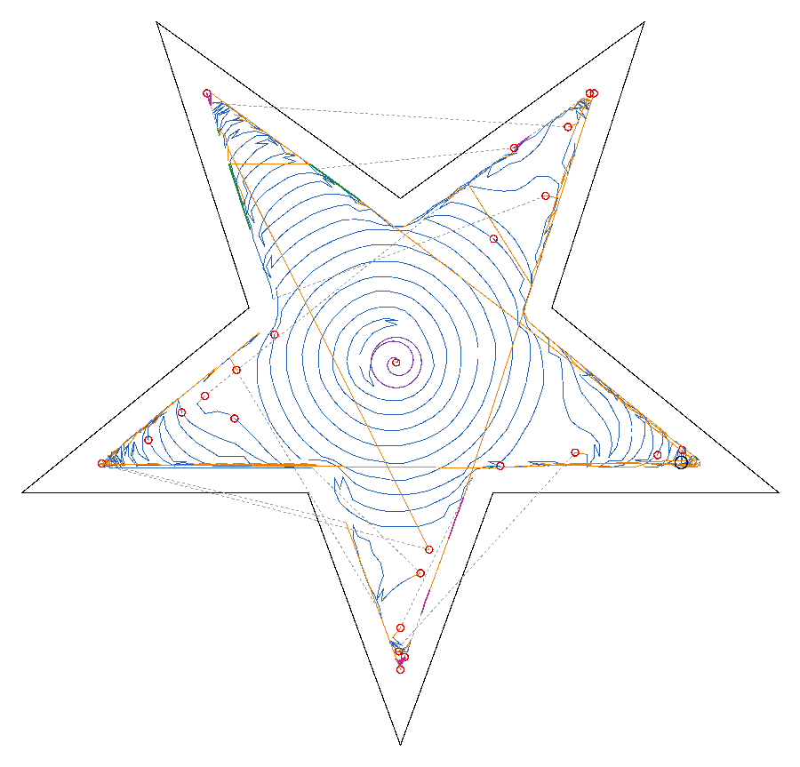
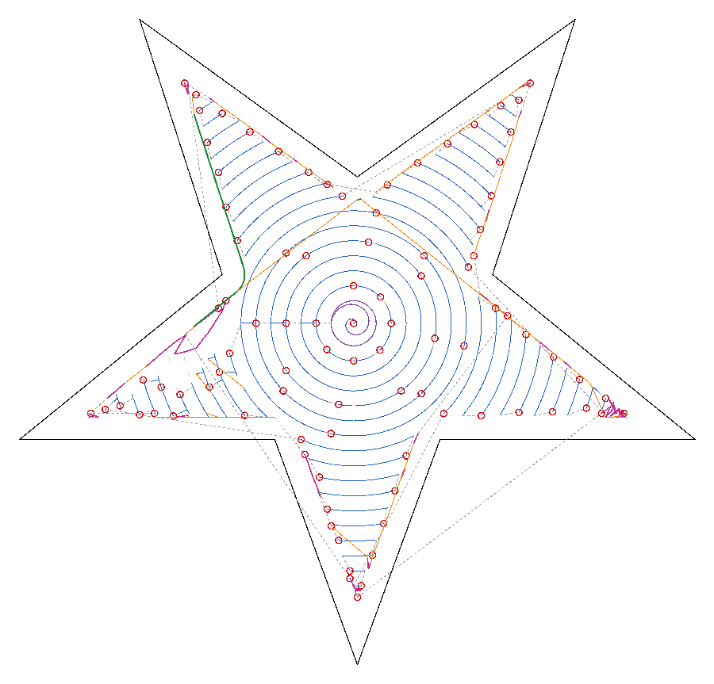
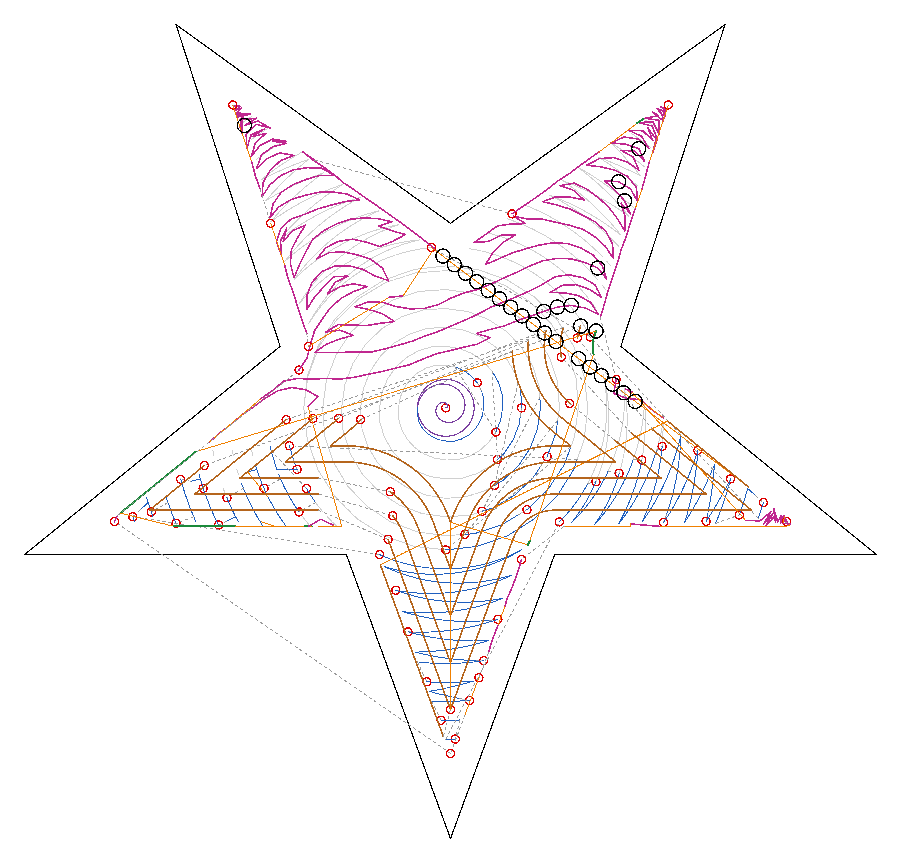
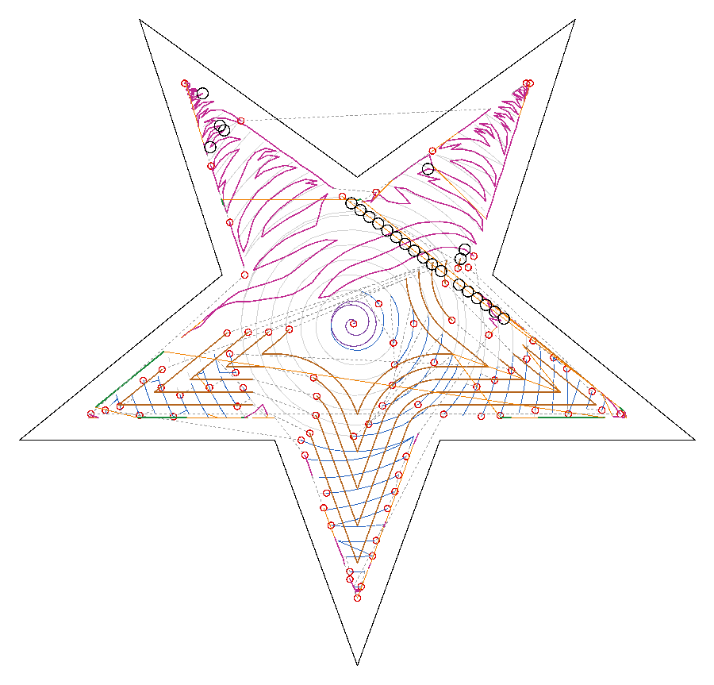

Agent

star / agent
pieces: 1
cut length: 1379.2 mm
keep-down links: 261 (596.2 mm)
entries (plunges): 25
retracts (lifts to safe Z, last included): 25
pass load (planner readout): max 0.4515 vs ceiling 0.3626; 1 of 1943 steps over; 0 exempt plunge-departure steps
over: clearing cut (segment 85) from (83.47, 40.11) to (83.35, 38.62), reading 0.4515
load by class, emitted plan (max reading, steps over of steps):
starter: max 0.3114, 0 of 160
clearing link: max 0.3277, 0 of 350
clearing: max 0.4515, 1 of 1230
wall pass link: max 0.0000, 0 of 90
wall pass: max 0.0000, 0 of 24
residue mop: max 0.2531, 0 of 21
residue mop link: max 0.1772, 0 of 68
load by class, raw plan (max reading, steps over of steps):
starter: max 0.3114, 0 of 160
clearing link: max 0.3277, 0 of 350
clearing: max 0.4651, 9 of 1239
entries by producer: starter 1, clearing at a wrap end (join) 0, clearing mid-wrap (replay split) 17, residue contour 0, wall pass 0, residue mop 7, other 0
raw plan (before the replay): 9 of 1749 steps over the ceiling (the steps the replay refuses; exact up to the first); the first ten:
refused: clearing cut (segment 5) from (35.37, 54.49) to (35.04, 53.81), reading 0.4465
refused: clearing cut (segment 5) from (60.44, 65.62) to (61.07, 65.20), reading 0.4470
refused: clearing cut (segment 5) from (61.17, 38.45) to (61.87, 38.19), reading 0.4540
refused: clearing cut (segment 10) from (49.26, 16.70) to (49.79, 16.18), reading 0.4531
refused: clearing cut (segment 32) from (79.95, 39.07) to (80.56, 39.51), reading 0.4571
refused: clearing cut (segment 73) from (83.14, 39.44) to (83.47, 40.11), reading 0.4651
refused: clearing cut (segment 220) from (29.70, 44.32) to (30.29, 43.84), reading 0.3670
refused: clearing cut (segment 222) from (24.48, 43.99) to (24.01, 44.57), reading 0.4499
refused: clearing cut (segment 267) from (20.41, 40.63) to (20.05, 41.29), reading 0.4583
ContourSpiral

star / contour_spiral
pieces: 1
cut length: 2850.6 mm
keep-down links: 25 (141.2 mm)
entries (plunges): 101
retracts (lifts to safe Z, last included): 101
pass load (planner readout): max 0.3613 vs ceiling 0.3626; 0 of 4498 steps over; 0 exempt plunge-departure steps
load by class, emitted plan (max reading, steps over of steps):
starter: max 0.3114, 0 of 160
clearing link: max 0.3163, 0 of 23
clearing: max 0.3613, 0 of 4153
wall pass link: max 0.0000, 0 of 75
wall pass: max 0.2500, 0 of 31
residue mop: max 0.3433, 0 of 44
residue mop link: max 0.2500, 0 of 12
load by class, raw plan (max reading, steps over of steps):
starter: max 0.3114, 0 of 160
clearing: max 0.8771, 501 of 4713
entries by producer: starter 1, clearing at a wrap end (join) 0, clearing mid-wrap (replay split) 93, residue contour 0, wall pass 0, residue mop 7, other 0
raw plan (before the replay): 501 of 4873 steps over the ceiling (the steps the replay refuses; exact up to the first); the first ten:
refused: clearing cut (segment 4) from (52.57, 48.75) to (53.22, 48.97), reading 0.3942
refused: clearing cut (segment 4) from (53.22, 48.97) to (53.76, 49.30), reading 0.6395
refused: clearing cut (segment 4) from (53.76, 49.30) to (54.16, 49.78), reading 0.5597
refused: clearing cut (segment 4) from (54.16, 49.78) to (54.40, 50.36), reading 0.4355
refused: clearing cut (segment 4) from (54.45, 50.98) to (54.31, 51.59), reading 0.3662
refused: clearing cut (segment 4) from (52.75, 52.84) to (52.68, 53.57), reading 0.4074
refused: clearing cut (segment 4) from (52.68, 53.57) to (52.36, 54.10), reading 0.4813
refused: clearing cut (segment 4) from (52.36, 54.10) to (51.88, 54.51), reading 0.4422
refused: clearing cut (segment 4) from (46.75, 50.74) to (45.89, 51.26), reading 0.5141
refused: clearing cut (segment 4) from (45.89, 51.26) to (45.03, 51.78), reading 0.7280
(a) as at G1

star / geodesic_g1
pieces: 1
cut length: 1010.9 mm
keep-down links: 66 (206.1 mm)
entries (plunges): 86
retracts (lifts to safe Z, last included): 86
pass load (planner readout): max 0.3614 vs ceiling 0.3626; 0 of 2559 steps over; 0 exempt plunge-departure steps
load by class, emitted plan (max reading, steps over of steps):
starter: max 0.3114, 0 of 160
clearing: max 0.3614, 0 of 2031
clearing link: max 0.0000, 0 of 17
wall pass link: max 0.0481, 0 of 74
wall pass: max 0.2992, 0 of 126
residue mop: max 0.3580, 0 of 65
residue mop link: max 0.2500, 0 of 86
load by class, raw plan (max reading, steps over of steps):
starter: max 0.3114, 0 of 160
clearing join: max 0.8333, 59 of 62
clearing wrap: max 0.9196, 153 of 2109
clearing link: max 0.7012, 7 of 91
entries by producer: starter 1, clearing at a wrap end (join) 58, clearing mid-wrap (replay split) 12, residue contour 0, wall pass 0, residue mop 15, other 0
raw plan (before the replay): 219 of 2422 steps over the ceiling (the steps the replay refuses; exact up to the first); the first ten:
refused: clearing cut join (ramp, back-run or seam step) (segment 4) from (46.50, 50.50) to (45.50, 50.50), reading 0.8333
refused: clearing cut on a wrap (segment 4) from (45.50, 50.50) to (44.50, 50.50), reading 0.8333
refused: clearing cut on a wrap (segment 4) from (44.62, 49.50) to (44.77, 49.00), reading 0.4124
refused: clearing cut on a wrap (segment 4) from (44.77, 49.00) to (44.97, 48.50), reading 0.4003
refused: clearing cut on a wrap (segment 4) from (45.00, 48.44) to (45.24, 48.00), reading 0.4492
refused: clearing cut on a wrap (segment 4) from (45.24, 48.00) to (45.50, 47.63), reading 0.3875
refused: clearing cut on a wrap (segment 4) from (45.50, 47.63) to (45.59, 47.50), reading 0.4004
refused: clearing cut on a wrap (segment 4) from (45.59, 47.50) to (46.00, 47.04), reading 0.3748
refused: clearing cut on a wrap (segment 4) from (46.04, 47.00) to (46.50, 46.59), reading 0.4486
refused: clearing cut on a wrap (segment 4) from (46.63, 46.50) to (47.00, 46.24), reading 0.4197
field piece 0: applied true, seed Some([49.5, 50.5]), seed radius 3.00 mm, levels 18, wrap pieces 103, converged true, front branches 1, spiral levels 0
(a) C3 state

star / geodesic_a
pieces: 1
cut length: 957.7 mm
keep-down links: 70 (197.5 mm)
entries (plunges): 92
retracts (lifts to safe Z, last included): 92
pass load (planner readout): max 0.3600 vs ceiling 0.3626; 0 of 2384 steps over; 0 exempt plunge-departure steps
load by class, emitted plan (max reading, steps over of steps):
starter: max 0.3114, 0 of 160
clearing: max 0.3600, 0 of 1912
clearing link: max 0.3185, 0 of 10
wall pass link: max 0.0000, 0 of 37
wall pass: max 0.2992, 0 of 48
residue mop: max 0.3543, 0 of 90
residue mop link: max 0.2500, 0 of 127
load by class, raw plan (max reading, steps over of steps):
starter: max 0.3114, 0 of 160
clearing join: max 0.8333, 57 of 59
clearing wrap: max 0.9550, 146 of 2026
clearing link: max 0.5376, 3 of 85
entries by producer: starter 1, clearing at a wrap end (join) 56, clearing mid-wrap (replay split) 20, residue contour 0, wall pass 0, residue mop 15, other 0
raw plan (before the replay): 206 of 2330 steps over the ceiling (the steps the replay refuses; exact up to the first); the first ten:
refused: clearing cut join (ramp, back-run or seam step) (segment 4) from (46.50, 50.50) to (45.50, 50.50), reading 0.8333
refused: clearing cut on a wrap (segment 4) from (45.50, 50.50) to (44.50, 50.50), reading 0.8333
refused: clearing cut on a wrap (segment 4) from (44.60, 49.50) to (44.73, 49.00), reading 0.4212
refused: clearing cut on a wrap (segment 4) from (45.00, 48.33) to (45.17, 48.00), reading 0.4055
refused: clearing cut on a wrap (segment 4) from (45.17, 48.00) to (45.50, 47.50), reading 0.4418
refused: clearing cut on a wrap (segment 4) from (45.50, 47.50) to (45.93, 47.00), reading 0.3786
refused: clearing cut on a wrap (segment 4) from (46.00, 46.93) to (46.50, 46.50), reading 0.4441
refused: clearing cut on a wrap (segment 4) from (46.50, 46.50) to (47.00, 46.17), reading 0.4138
refused: clearing cut on a wrap (segment 4) from (47.33, 46.00) to (47.50, 45.92), reading 0.4431
refused: clearing cut on a wrap (segment 4) from (47.50, 45.92) to (48.00, 45.73), reading 0.4520
field piece 0: applied true, seed Some([49.5, 50.5]), seed radius 3.00 mm, levels 18, wrap pieces 98, converged true, front branches 1, spiral levels 0
(a) morph, half-pitch legs

star / geodesic_morph_alt
pieces: 1
cut length: 1487.7 mm
keep-down links: 82 (305.3 mm)
entries (plunges): 69
retracts (lifts to safe Z, last included): 69
pass load (planner readout): max 0.9745 vs ceiling 0.3626; 27 of 2522 steps over; 0 exempt plunge-departure steps
over: residue contour link (segment 96) from (48.00, 67.43) to (49.19, 66.53), reading 0.8836
over: residue contour link (segment 96) from (49.19, 66.53) to (50.39, 65.63), reading 0.9663
over: residue contour link (segment 96) from (50.39, 65.63) to (51.58, 64.73), reading 0.9663
over: residue contour link (segment 96) from (51.58, 64.73) to (52.78, 63.82), reading 0.9501
over: residue contour link (segment 96) from (52.78, 63.82) to (53.97, 62.92), reading 0.9663
over: residue contour link (segment 96) from (53.97, 62.92) to (55.17, 62.02), reading 0.9338
over: residue contour link (segment 96) from (55.17, 62.02) to (56.36, 61.12), reading 0.9663
over: residue contour link (segment 96) from (56.36, 61.12) to (57.56, 60.22), reading 0.9663
over: residue contour link (segment 96) from (57.56, 60.22) to (58.75, 59.31), reading 0.9663
over: residue contour link (segment 96) from (58.75, 59.31) to (59.95, 58.41), reading 0.9501
over: residue contour link (segment 96) from (59.95, 58.41) to (61.14, 57.51), reading 0.9745
over: residue contour link (segment 96) from (62.34, 56.61) to (63.53, 55.70), reading 0.5511
over: residue contour link (segment 96) from (63.53, 55.70) to (64.73, 54.80), reading 0.8510
over: residue contour link (segment 96) from (64.73, 54.80) to (65.92, 53.90), reading 0.9501
over: residue contour link (segment 96) from (65.92, 53.90) to (67.12, 53.00), reading 0.9663
over: residue contour link (segment 96) from (67.12, 53.00) to (68.31, 52.09), reading 0.9663
over: residue contour link (segment 96) from (68.31, 52.09) to (69.51, 51.19), reading 0.9501
over: residue contour cut (segment 104) from (63.53, 58.45) to (63.75, 59.15), reading 0.6086
over: wall pass cut (segment 141) from (65.15, 57.92) to (65.37, 58.63), reading 0.4198
over: residue mop cut (segment 168) from (58.44, 60.19) to (59.85, 60.69), reading 0.4287
over: residue mop cut (segment 168) from (60.57, 60.92) to (61.28, 61.15), reading 0.3911
over: residue mop cut (segment 168) from (62.03, 61.24) to (62.77, 61.33), reading 0.3709
over: residue mop cut (segment 168) from (64.87, 65.57) to (65.56, 65.28), reading 0.4492
over: residue mop cut (segment 168) from (68.70, 71.69) to (68.39, 72.37), reading 0.4490
over: residue mop cut (segment 168) from (67.02, 74.44) to (67.77, 74.38), reading 0.4530
over: residue mop cut (segment 168) from (70.20, 77.20) to (69.89, 77.88), reading 0.4504
over: residue mop cut (segment 306) from (28.94, 80.57) to (28.23, 80.33), reading 0.4483
load by class, emitted plan (max reading, steps over of steps):
starter: max 0.3114, 0 of 160
clearing: max 0.3618, 0 of 816
clearing link: max 0.3185, 0 of 5
residue contour link: max 0.9745, 17 of 67
residue contour: max 0.6086, 1 of 670
wall pass link: max 0.3508, 0 of 63
wall pass: max 0.4198, 1 of 31
residue mop link: max 0.0527, 0 of 122
residue mop: max 0.4530, 8 of 588
load by class, raw plan (max reading, steps over of steps):
starter: max 0.3114, 0 of 160
clearing spiral: max 0.5044, 138 of 392
clearing link: max 0.5376, 3 of 85
clearing wrap: max 0.9550, 52 of 651
clearing join: max 0.8333, 28 of 30
clearing morph: max 0.5972, 51 of 994
entries by producer: starter 1, clearing at a wrap end (join) 30, clearing mid-wrap (replay split) 14, residue contour 12, wall pass 0, residue mop 12, other 0
raw plan (before the replay): 272 of 2312 steps over the ceiling (the steps the replay refuses; exact up to the first); the first ten:
refused: clearing cut spiral (segment 4) from (53.27, 52.32) to (52.82, 53.15), reading 0.3944
refused: clearing cut spiral (segment 4) from (51.40, 54.44) to (50.49, 54.83), reading 0.3804
refused: clearing cut spiral (segment 4) from (50.49, 54.83) to (49.50, 55.00), reading 0.4005
refused: clearing cut spiral (segment 4) from (49.50, 55.00) to (48.47, 55.01), reading 0.5044
refused: clearing cut spiral (segment 4) from (48.47, 55.01) to (47.47, 54.72), reading 0.4125
refused: clearing cut spiral (segment 4) from (47.47, 54.72) to (46.54, 54.21), reading 0.4640
refused: clearing cut spiral (segment 4) from (46.54, 54.21) to (45.74, 53.50), reading 0.3734
refused: clearing cut spiral (segment 4) from (45.74, 53.50) to (45.11, 52.62), reading 0.4256
refused: clearing cut spiral (segment 4) from (45.11, 52.62) to (44.69, 51.60), reading 0.4544
refused: clearing cut spiral (segment 4) from (44.69, 51.60) to (44.50, 50.50), reading 0.3983
field piece 0: applied true, seed Some([49.5, 50.5]), seed radius 3.00 mm, levels 18, wrap pieces 121, converged true, front branches 1, spiral levels 6
lobes piece 0: 6 lobes of 29 arcs, 63 plain wraps; not joined: split 53, branch 0, length ratio 11, gap 0; lobes that left the region (cut plain) 0; return length 0.0 mm
(a) morph, return along cut

star / geodesic_morph_return
pieces: 1
cut length: 1424.2 mm
keep-down links: 41 (299.3 mm)
entries (plunges): 79
retracts (lifts to safe Z, last included): 79
pass load (planner readout): max 0.9745 vs ceiling 0.3626; 24 of 2357 steps over; 0 exempt plunge-departure steps
over: residue contour link (segment 106) from (48.00, 67.43) to (49.19, 66.53), reading 0.8836
over: residue contour link (segment 106) from (49.19, 66.53) to (50.39, 65.63), reading 0.9663
over: residue contour link (segment 106) from (50.39, 65.63) to (51.58, 64.73), reading 0.9663
over: residue contour link (segment 106) from (51.58, 64.73) to (52.78, 63.82), reading 0.9501
over: residue contour link (segment 106) from (52.78, 63.82) to (53.97, 62.92), reading 0.9663
over: residue contour link (segment 106) from (53.97, 62.92) to (55.17, 62.02), reading 0.9338
over: residue contour link (segment 106) from (55.17, 62.02) to (56.36, 61.12), reading 0.9663
over: residue contour link (segment 106) from (56.36, 61.12) to (57.56, 60.22), reading 0.9663
over: residue contour link (segment 106) from (57.56, 60.22) to (58.75, 59.31), reading 0.9663
over: residue contour link (segment 106) from (58.75, 59.31) to (59.95, 58.41), reading 0.9501
over: residue contour link (segment 106) from (59.95, 58.41) to (61.14, 57.51), reading 0.9745
over: residue contour link (segment 106) from (62.34, 56.61) to (63.53, 55.70), reading 0.5511
over: residue contour link (segment 106) from (63.53, 55.70) to (64.73, 54.80), reading 0.8510
over: residue contour link (segment 106) from (64.73, 54.80) to (65.92, 53.90), reading 0.9501
over: residue contour link (segment 106) from (65.92, 53.90) to (67.12, 53.00), reading 0.9663
over: residue contour link (segment 106) from (67.12, 53.00) to (68.31, 52.09), reading 0.9663
over: residue contour link (segment 106) from (68.31, 52.09) to (69.51, 51.19), reading 0.9501
over: residue contour cut (segment 110) from (63.53, 58.45) to (63.75, 59.15), reading 0.6086
over: residue mop cut (segment 206) from (65.50, 59.50) to (64.30, 60.39), reading 0.4814
over: residue mop cut (segment 209) from (30.99, 74.46) to (30.40, 73.99), reading 0.4533
over: residue mop cut (segment 209) from (31.66, 75.79) to (32.26, 76.24), reading 0.4553
over: residue mop cut (segment 209) from (31.08, 76.45) to (31.70, 76.87), reading 0.4626
over: residue mop cut (segment 212) from (58.71, 70.77) to (59.39, 71.10), reading 0.4575
over: residue mop cut (segment 234) from (28.77, 80.73) to (29.38, 81.15), reading 0.4503
load by class, emitted plan (max reading, steps over of steps):
starter: max 0.3114, 0 of 160
clearing: max 0.3618, 0 of 759
clearing link: max 0.3185, 0 of 5
residue contour link: max 0.9745, 17 of 46
residue contour: max 0.6086, 1 of 618
wall pass link: max 0.1442, 0 of 104
wall pass: max 0.3230, 0 of 43
residue mop link: max 0.2500, 0 of 65
residue mop: max 0.4814, 6 of 557
load by class, raw plan (max reading, steps over of steps):
starter: max 0.3114, 0 of 160
clearing spiral: max 0.5044, 138 of 392
clearing link: max 0.5376, 3 of 84
clearing wrap: max 0.9550, 56 of 609
clearing join: max 0.8333, 42 of 47
clearing return: max 0.3586, 0 of 458
clearing morph: max 0.7598, 75 of 514
entries by producer: starter 1, clearing at a wrap end (join) 35, clearing mid-wrap (replay split) 14, residue contour 12, wall pass 0, residue mop 17, other 0
raw plan (before the replay): 314 of 2264 steps over the ceiling (the steps the replay refuses; exact up to the first); the first ten:
refused: clearing cut spiral (segment 4) from (53.27, 52.32) to (52.82, 53.15), reading 0.3944
refused: clearing cut spiral (segment 4) from (51.40, 54.44) to (50.49, 54.83), reading 0.3804
refused: clearing cut spiral (segment 4) from (50.49, 54.83) to (49.50, 55.00), reading 0.4005
refused: clearing cut spiral (segment 4) from (49.50, 55.00) to (48.47, 55.01), reading 0.5044
refused: clearing cut spiral (segment 4) from (48.47, 55.01) to (47.47, 54.72), reading 0.4125
refused: clearing cut spiral (segment 4) from (47.47, 54.72) to (46.54, 54.21), reading 0.4640
refused: clearing cut spiral (segment 4) from (46.54, 54.21) to (45.74, 53.50), reading 0.3734
refused: clearing cut spiral (segment 4) from (45.74, 53.50) to (45.11, 52.62), reading 0.4256
refused: clearing cut spiral (segment 4) from (45.11, 52.62) to (44.69, 51.60), reading 0.4544
refused: clearing cut spiral (segment 4) from (44.69, 51.60) to (44.50, 50.50), reading 0.3983
field piece 0: applied true, seed Some([49.5, 50.5]), seed radius 3.00 mm, levels 18, wrap pieces 98, converged true, front branches 1, spiral levels 6
lobes piece 0: 6 lobes of 29 arcs, 63 plain wraps; not joined: split 53, branch 0, length ratio 11, gap 0; lobes that left the region (cut plain) 0; return length 192.1 mm